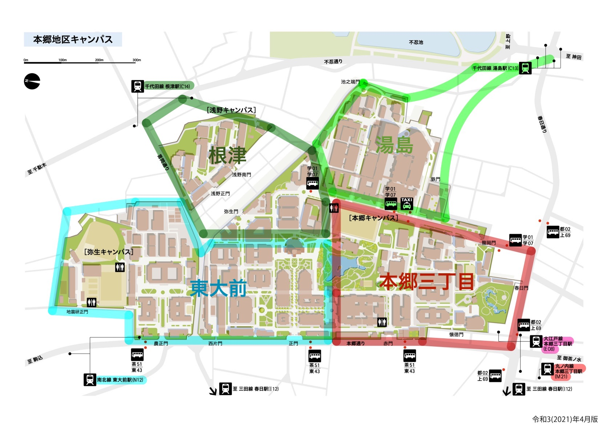

各駅の勢力圏ねhello
目的地ごとの最寄駅
学部ごとの最速
| 学部 | 最寄駅 |
|---|---|
| 法学部: | 東大前 |
| 経済学部: | 本郷三丁目 |
| 文学部: | 東大前 |
| 教育学部: | 本郷三丁目 |
| 工学部: | 東大前・根津 |
| 農学部: | 東大前 |
| 理学部: | 根津・本郷三丁目 |
| 医学部: | 本郷三丁目 |
| 薬学部: | 本郷三丁目 |
場所ごとの最速
| 場所 | 最寄駅 |
|---|---|
| 赤門: | 本郷三丁目 |
| 総合図書館: | 本郷三丁目 |
| 正門: | 東大前 |
| 安田講堂: | 東大前 |
| 三四郎池: | 本郷三丁目 |
| 中央食堂: | 東大前 |
| 第2食堂: | 根津 |
| 銀杏メトロ食堂: | 東大前 |
| 農学部食堂: | 東大前 |
| テニスコート: | 東大前 |
|---|---|
| 野球場: | 東大前 |
| 弓道場: | 本郷三丁目 |
| 御殿下グラウンド: | 本郷三丁目 |
| 農学部グラウンド: | 東大前 |
| 公式ショップ: | 東大前 |
| 医学部附属病院: | 湯島 |